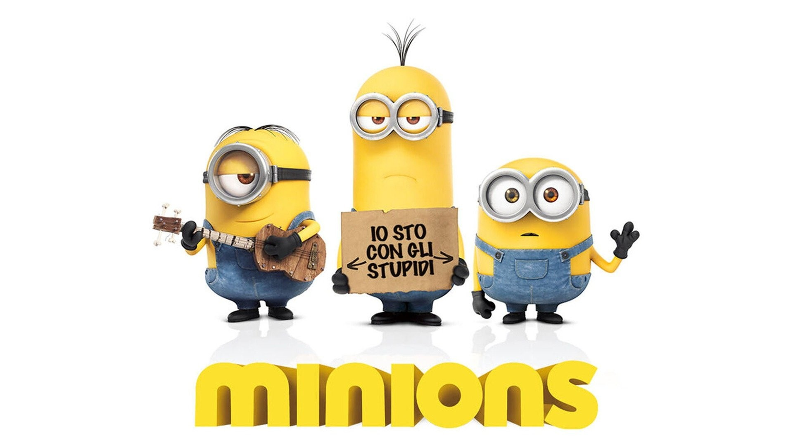

Minions is a 2015 American animated comedy film produced by Illumination Entertainment
and distributed by Universal Pictures. The film is a spin-off/prequel to Despicable Me
(2010) and the third installment overall in the film series of the same name. Directed
by Pierre Coffin and Kyle Balda, produced by Chris Meledandri and Janet Healy, and written
by Brian Lynch, Minions stars the voices of Coffin as the Minions (including Kevin,
Stuart, and Bob), Sandra Bullock, Jon Hamm, Michael Keaton, Allison Janney, Steve Coogan,
Jennifer Saunders, and Geoffrey Rush as the narrator. In the film, the Minions search for
their replaceable evil master after accidentally killing all of those in history.
Minions debuted in London on June 11, 2015, and was released in the United
States on July 10. It received mixed reviews from critics, who praised the
animation, voice acting, and score, but criticized the character development
and humor, which some called unfunny and inappropriate. The film grossed
$1.159 billion worldwide, and became the fifth-highest-grossing film of 2015,
the tenth-highest-grossing film of all time and the second-highest-grossing animated
film of all time at its peak. It also became the highest-grossing film produced by
Illumination until it was surpassed by The Super Mario Bros. Movie in 2023. A sequel,
Minions: The Rise of Gru, was released in 2022 to similar success.